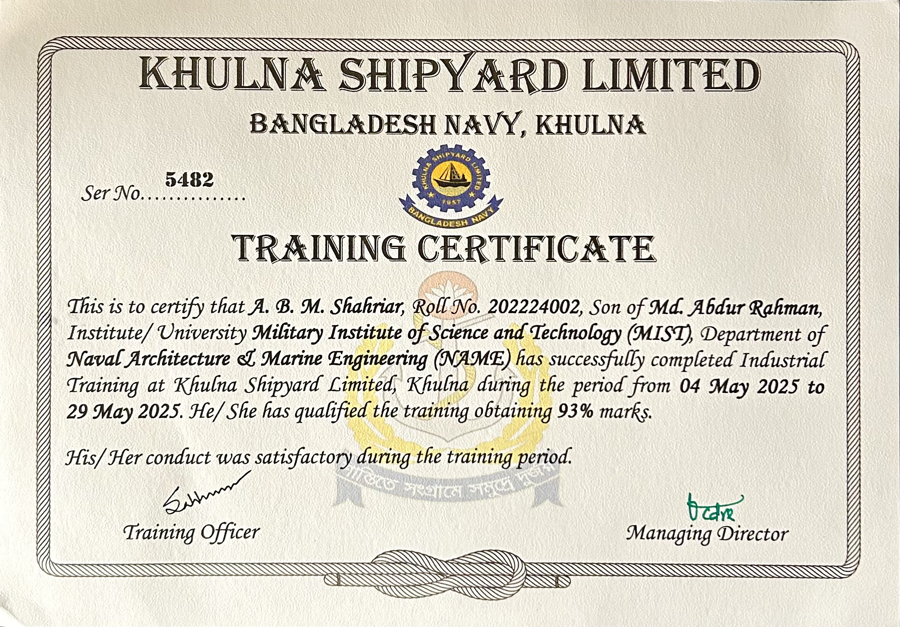
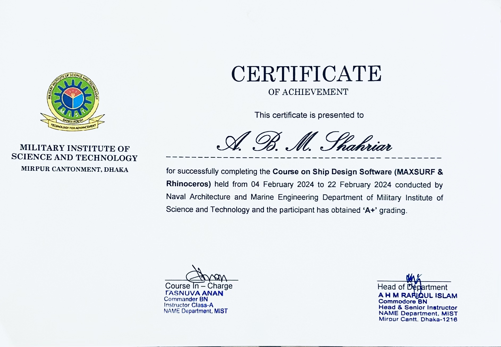
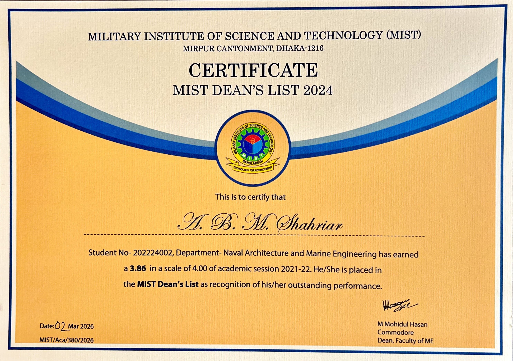

A. B. M. SHAHRIAR
Naval Architect
Education
-
BSc. in Naval Architecture & Marine Engineering (NAME) :
Military Institute of Science and Technology (MIST)
CGPA: 3.70/4.00 | Ongoing | Expected Graduation: May 2026
-
Higher Secondary Certificate (Science) :
Cantonment Public School and College Rangpur (CPSCR)
GPA: 5.00/5.00 | Year: 2020
-
Secondary School Certificate (Science) :
Kurigram Govt. High School (KGHS)
GPA: 5.00/5.00 | Year: 2018
Projects
-
Design and Analysis of a 140 TEUs Inland Container Ship
Completed the design phase and successfully present the physical 3D model of a 140 TEUs Inland Container Ship. This journey involved extensive design work, stability analysis, and refining details to ensure efficiency and practicality. Seeing the concept take shape in 3D was a truly rewarding experience!
Experience
-
1. Teaching Assistant
(Udvash Academic & Admission Care , Jan 2023 – Dec 2024 )
- Addressed student queries across various academic topics, providing clear and effective explanations.
- Evaluated and graded answer scripts, ensuring accuracy and constructive feedback.
-
2. Problem Solver
(ROOTs Edu , Jun 2022 – Jan 2023 )
- Provided accurate and timely solutions to student queries across various academic subjects.
- Maintained efficiency and clarity while solving problems under time constraints.
Training & Certifications
-
1. Industrial Trainee
(Khulna Shipyard Limited , May 2025 – May 2025 )
- Completed industrial training at Khulna Shipyard Ltd., gaining hands-on experience in shipbuilding, repair, and inspection.
- Worked under expert supervision, enhancing practical skills in docking operations, system maintenance, and quality control.
-
2. Course on "Ship Design Software (Maxsurf & Rhinoceros)"
(NAME dept.. MIST, March 2023)
- Completed a practical training program on ship design, stability analysis, and modeling using Maxsurf and Rhinoceros 3D.
- Gained hands-on experience in hull design, stability calculations, and resistance prediction for marine vessels.


Awards
-
MIST Dean's List Award 2024
(MIST, March 2026)
- Recognized for outstanding academic performance and consistent excellence throughout the year.

Activities
-
1. Director (Event Management)
(MIST NAME FEST 2026, January 2026)
- Led event coordination and team management for NAME FEST 2026.
- Secured sponsorships and managed external communications to support the event.
-
2. General Secretary
(MIST Readers Club, June 2025 – Present)
- Organized essay writing competitions and conducted Advanced Report Writing with MS Word training for students.
- Coordinated club activities including reading campaigns, book distribution, and magazine publication.
-
3. Campus Ambassador
(Phitron , June 2025 – December 2025)
- Promoted tech learning and community engagement on campus.
- Organized events and guided peers toward programming and career resources
-
4. Senior Executive Director(Organizing)
(MIST Readers Club , April 2024 – May 2025)
- Organized the Free Books Campaign during multiple campus events to promote reading among students.
- Coordinated event logistics and volunteer teams for successful campaign execution.
-
5. Child Researcher
(National Children Task Force (NCTF), Bangladesh , Jan 2016 – Dec 2017)
- Conducted child-focused research and awareness activities to promote children’s rights.
- Participated in campaigns and advocacy initiatives addressing child marriage, child labor, and child abuse.